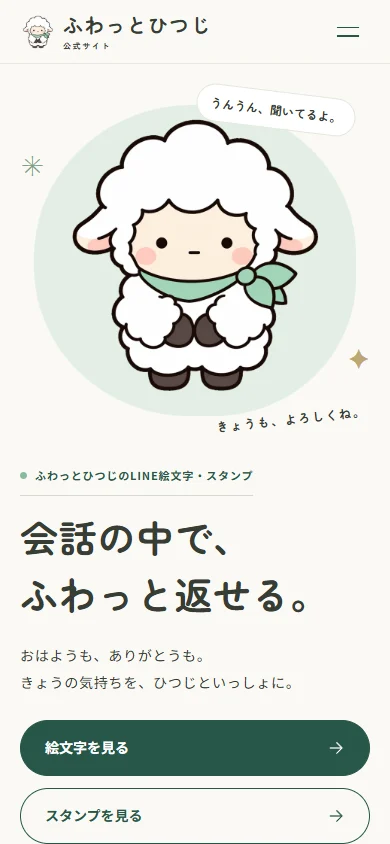

キャラクターを主役にした、親しみやすいデザイン
アイボリーの背景とミントの色面に、キャラクターの絵と短い言葉を大きく配置しました。色や装飾を絞り、表情と世界観を邪魔しないシンプルなUIに。キャラクター紹介、LINE絵文字・スタンプ、Instagramの順に、知ることから関連コンテンツへ進む流れを整理しました。
プロジェクト概要
自身が制作・展開するオリジナルキャラクター「ふわっとひつじ」の世界観や活動内容を伝える公式Webサイト。情報設計・ワイヤーフレーム・デザイン仕様策定から、Webデザイン、実装、公開まで一連の制作工程を担当しました。
制作目的
キャラクターの世界観を表現し、公式情報をまとめる場所を作ること。InstagramやLINEスタンプ・絵文字への入口を整え、今後のコンテンツ追加を支える基盤を目指しました。
担当範囲
企画・キャラクターコンセプト整理・要件定義・情報設計・サイトマップ・ワイヤーフレーム・デザイン仕様策定・Webデザイン・UI設計・フロントエンド実装・レスポンシブ対応・確認・公開
制作プロセス
要件整理 → 事前調査 → サイトマップ → ワイヤーフレーム → デザイン仕様 → 実装 → 確認 → 公開
制作支援ツール
企画・要件・デザイン・方向性の判断と最終確認は自身で担当。生成AI・Codexは、調査、情報整理、実装、確認を効率化するための制作支援ツールとして活用しました。
使用技術
Astro / TypeScript / CSS
公開サイト
アイボリーの背景とミントの色面に、キャラクターの絵と短い言葉を大きく配置しました。色や装飾を絞り、表情と世界観を邪魔しないシンプルなUIに。キャラクター紹介、LINE絵文字・スタンプ、Instagramの順に、知ることから関連コンテンツへ進む流れを整理しました。

画面幅に合わせてレイアウトと文字の大きさを調整し、スマートフォンではナビゲーションを開閉式にしました。トップに絵文字・スタンプへのボタンを置き、絵文字は横に送って見比べられる構成に。フレンズはキャラクターを選ぶとプロフィールと関連スタンプが開き、Instagramへも迷わず進めるよう導線を設けました。